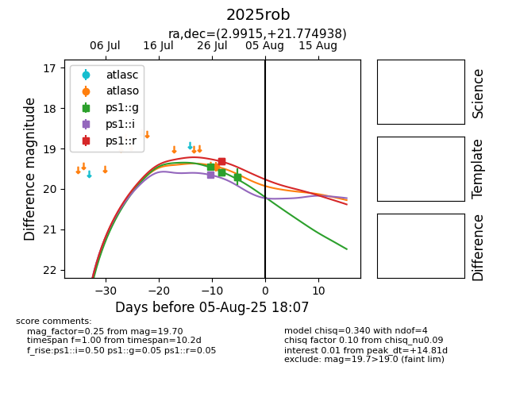

Target 2025rob at 2025-08-06 17:45, see:
YSE: ziggy.ucolick.org/yse/transient_detail/2025rob
alt names
2025rob (yse)
coordinates:
equatorial (ra, dec) = (2.9915,+21.77494)
galactic (l, b) = (110.9099,-40.17359)
photometry
last atlasc=19.41, atlaso=19.45, ps1::g=19.70, ps1::i=19.65, ps1::r=19.70
1 atlasc, 1 atlaso, 5 ps1::g, 1 ps1::i, 4 ps1::r detections
